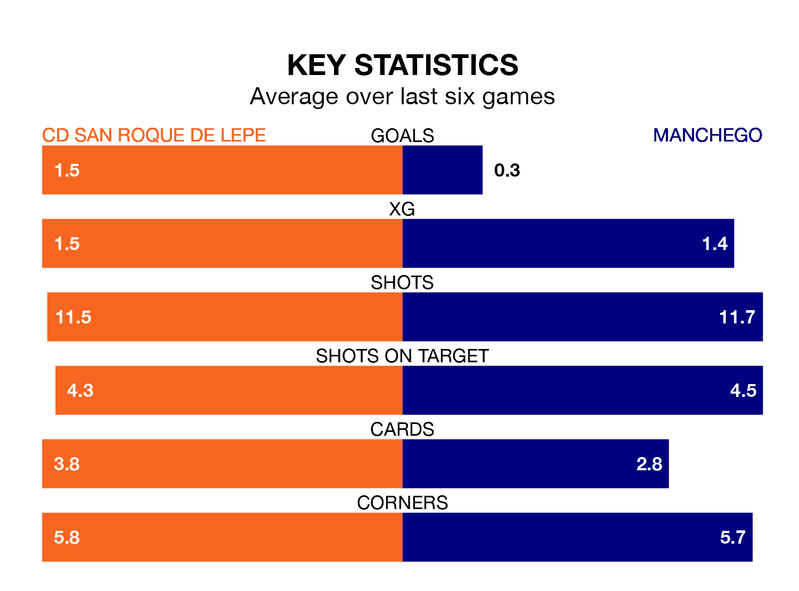

Manchego travel to the Estadio Municipal Ciudad de Lepe looking to secure a first win in nine Segunda División RFEF Group 4 games against CD San Roque de Lepe on Sunday.
Manchego have lost four and drawn four matches since they last earned three points – against La Unión Atlético on December 9.
They face a San Roque de Lepe side who have won four and lost four over that time.
Manchego are 16th in the table after 23 games, of which they have won five and drawn eight, earning 23 points.
San Roque de Lepe are two places ahead of the visitors in 14th, with seven wins and five draws putting them on 26 points.
With 15 goals in 23 games so far this season, Manchego are the league's second-lowest scorers with 0.7 goals per game. And they are conceding more than average, letting in 28 goals at a rate of 1.2 per game.
The home team, meanwhile, are average scorers, with 1.0 goal per game. They have also conceded 1.0 goal per game.
San Roque de Lepe's last match was on February 18, a 2-1 win against Águilas.
Manchego drew 0-0 with Racing Cartagena MM last time out, on February 17.
Updated: 12:18 (UTC), 19/02/24